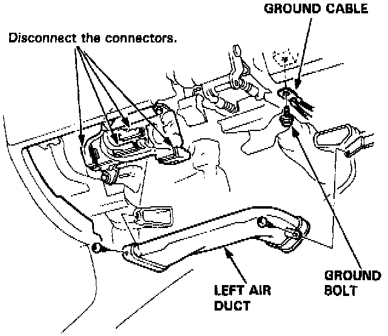
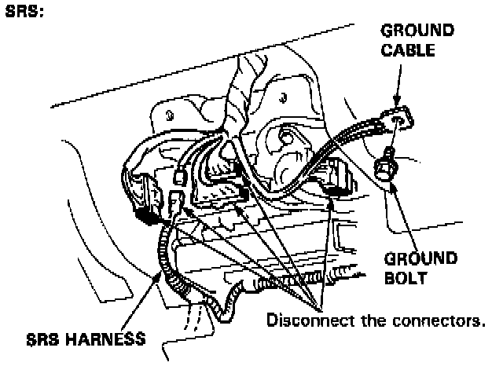
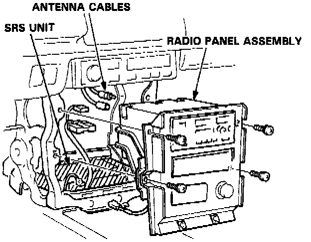
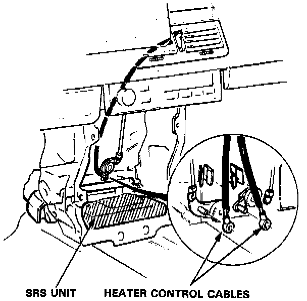
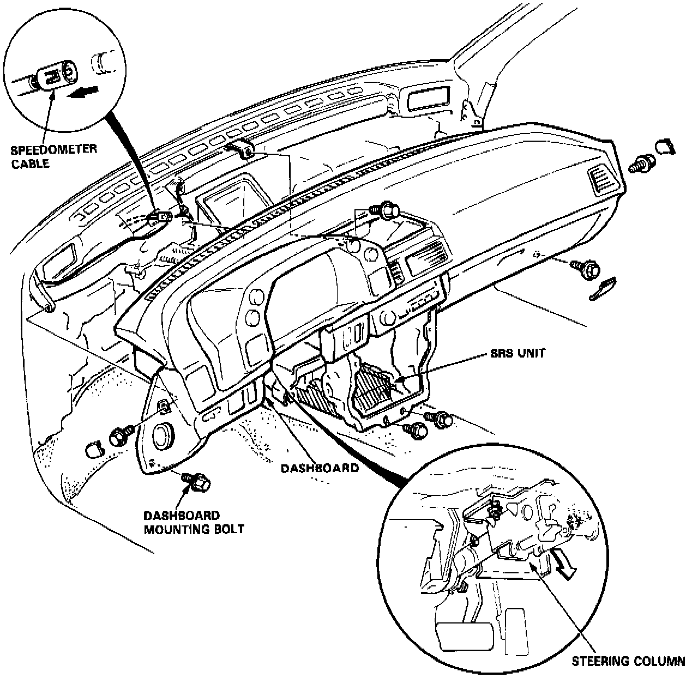

Dash Board Removal and Installation
NOTE: SRS wire harness is routed near the dashboard.WARNING: All SRS wire harness and connectors are colored Yellow. Do not use electrical test equipment on these circuit.
CAUTION: Be careful not to damage SRS wire harness when servicing the dashboard.
REPLACEMENT
1. To remove the dashboard, first remove the:
- Dashboard lower panel.
- Knee bolster (SRS).
- Left air duct.
- Hood opener.
- Console.
2. Disconnect the wire harnesses from the connector holder.


3. Remove the dash harness ground bolt from the steering column.
4. Remove the screws and radio panel assembly, then disconnect the wire connectors, antenna cables and wire tie.

5. Remove the radio assembly.

6. Disconnect the heater control cable. (Std.)
7. Remove the center dash pocket.
8. Lower the steering column.
CAUTION: Remove the ignition key from the lock cylinder.
9. Remove the dashboard mounting bolts.
10. Pull the dashboard straight back and disconnect the speedometer cable.
REASSEMBLY NOTES:
- Make sure the dashboard fits onto the body correctly.
- Before tightening the dashboard bolts, make sure the instrument wires are not pinched, and that the dashboard is not interfering with the heater control cable (std).
- For ease of installation, remove gauge assembly from dash.
